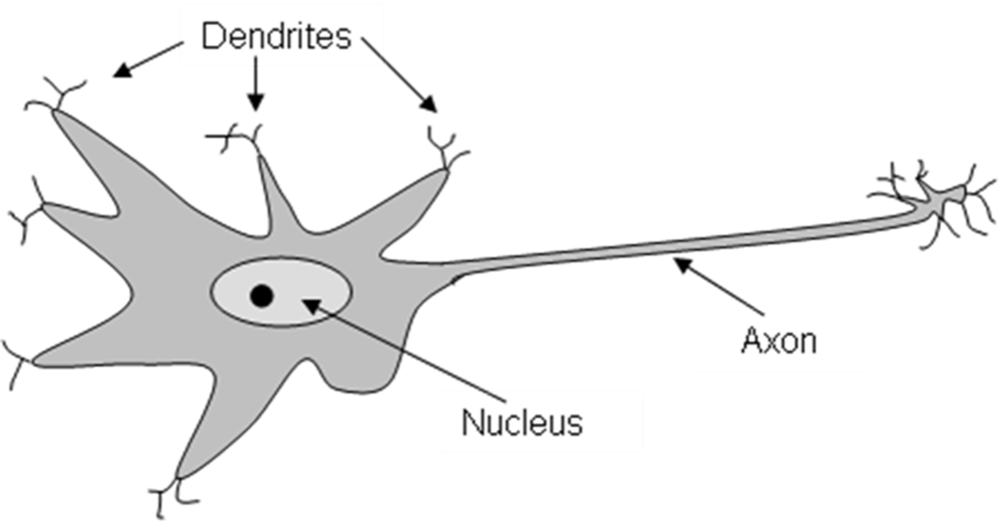

Kurzweil’s Estimates
Turing Test Predictions
Hardware Considerations
To estimate when human level intelligence in computers would be achieved – and thus when the Turing Test would be passed, Kurzweil first estimated the information processing capacity of the human brain.
He then used his “Law of Accelerating Returns” to estimate when computers would have roughly the same level of information processing power as the human brain – when we would have ‘hardware’ powerful enough to simulate a human brain in real time.
His basic assumption was that the transmission of one ‘signal’ across a synaptic gap between neurons (the most fundamental operation of the brain) is roughly equivalent to one floating point operation – a single instruction, which is the most fundamental operation of a computer.

Software Considerations
In addition to the hardware necessary to achieve human level intelligence, there is also the question of the software.
Since it is pretty much impossible to predict when various AI algorithms will be discovered, Kurzweil reasoned that the most obvious “brute force” path to achieving human intelligence in a computer would be to create a digital copy of a human brain.
He noted that progress in medical imaging technology (e.g., CT scanners, MRIs) is following his “Law of Accelerating Returns” in that scanning resolution is improving exponentially with time and would eventually reach the level of being able to resolve the individual synapses of the human brain.
Thus, at some point, we should have the hardware and software to “upload” and simulate a human in real time on a computer, and thereby pass the Turing Test
Quantifying Estimates
The human brain is estimated to contain approximately 100 billion neurons, or \(1 \times 10^{11}\) neurons 1.
It is estimated that each neuron is connected to 5,000 to 10,000, or \(1 \times 10^4\) other neurons across synaptic gaps 2.
Thus, the human brain contains approximately 1 million billion or \(1 \times 10^{15}\) synaptic connections:
\[ \left( 1 \times 10^{11} \text{ neurons} \right) \times \left( 1 \times 10^4 \dfrac{\text{synapses}}{\text{neuron}} \right) = 1 \times 10^{15} \text{ synaptic connections}\]
Neurons communicate with one another by passing neurochemicals (e. g., dopamine) across the synaptic gaps between their dendrites. Estimates of the average rate of speed with which neurons can “fire” (send a signal to the neurons they are connected to) vary widely, as some neurons may fire every few seconds while others may fire a few hundred times a second.
If we estimate the average neuron firing rate at 100 times per second (Kurzweil originally used 200), we end up with 100 million billion, or \(1 * 10^{17}\) “signals” that can be transmitted per second by the human brain.
Kurzweil predicted in 1999 that “prior to 2020” the faster supercomputers would have enough raw processing power to exceed that of the human brain. And if we take 100 million billion FLOPS as an accurate estimate of the processing power of the human brain, Kurzweil was correct. In June 2018, IBM’s Summit computer reached 122.3 million billion FLOPS (122.3 petaFLOPS).

Final Estimate
Kurzweil was less sure of when we would be able to scan a human brain and upload it. And he also recognized that there would be “overhead” in conducting a brain simulation, so he added a fudge factor of a decade, setting the deadline for human level intelligence in computers and passing the Turing test no later than 2029.
Of course, these days no one really expects whole brain simulation / uploading to be the way human level intelligence in computers is reached, but Kurzweil’s general approach for predicting an outcome 30 years in the future makes some sense – and is certainly better than “guessing” a date (as one could argue Vernor Venge did).
Singularity Predictions
Kurzweil’s 2005 prediction that the singularity will be achieved by 2045 is equally straightforward and based directly on his “Law of Accelerating Returns”.
Given human level intelligence in computers by 2029, he simply extrapolated that intelligence would double every two years in accordance with the historic rate of increase in computing technology.
Since 16 years would represent 8 doublings or a 256 fold increase, that is \(2^8 = 256\), in intelligence, Kurzweil reasoned that by 2045 humans will no longer be the dominate intellectual force on the planet and that progress driven by machines which double their intellectual capacity every two years, would far outstrip anything humans could hope to accomplish.
Researcher’s Thoughts
Dr. O’Neal has been one of the few computer scientists consistently presenting Kurzweil’s ideas to his students in his AI classes for the past 30+ years. He has felt that even if these predictions were unlikely to be proven true, the reasoning behind Kurzweil’s projections were fascinating in their own right, and the implications if he were correct were so profound that he wanted students to be aware of Kurzweil’s ideas.
Over the last few years (2020-2025), things have dramatically changed. Vinge and Kurzweil have gone from the “fringe” to “brilliant visionaries”. Serious AI researchers, at the forefront of machine learning, are now frequently speaking about the likelihood of a technological singularity within a handful of years. There is also active debate as to whether current Large Language Models (LLMs) now pass the Turing Test. Anyone who has interacted with ChatGPT or CharacterAI must admit these systems are at least close to being able to use language and converse at the human level.
The initial public release of ChatGPT occurred on November 30, 2022. ChatGPT integrated a chat interface to GPT 3.5 for use with the general public.
ChatGTP can solve many problems that computer scientists and AI researchers have been working on for well over half a century with little success. Now, suddenly, its not just science fiction writers and “futurists” who are talking about the relatively near-term possibility of Artificial General Intelligence and the singularity, it is the AI researchers themselves who are sounding the alarms about a potentially existential crisis for the human race. Not one expected LLMs to be so good at so many things. These are the first truly “broad” AIs ever created – they can solve many types of problems.
Progress was so quick. In just a few years we went from nothing to near-human level performance. After many decades of lots of effort and very little progress.There doesn’t appear to be any fundamental roadblocks to continued rapid advancement. And, in fact, capability appears to be directly correlated with increasing number of parameters (weights) and volume of training data. (I.e., we know how to continue scaling improvements.)
No one knows exactly what they know. There is a very real problem of “alignment”. Getting these systems to behave in ways we want them to.
No one truly knows the future, though as we have seen in this lecture extrapolating long-term trends such as Moore’s Law and Kurweil’s Law of Accelerating Returns can sometimes produce impressive results. The fact is the experts – those developing the technology – are clearly concerned, some might say “scared”.
Humans may be a handful of years from developing a human-level Artificial General Intelligence (AGI). Will superintelligent AGI soon follow?
The Center for AI Safety realeased a statement on My 30th, 2023. Signed by many luminaries in the field of AI research, including:
- Geoffrey Hinton - Emeritus Professor of Computer Science, University of Toronto, 2024 Nobel Prize Winner in Physics
- Demis Hassabis - CEO, Google DeepMind
- Sam Altman - CEO, OpenAI
- Dario Amodei - CEO, Anthropic
- Bill Gates - Gates Ventures
- Ilya Sutskever - Co-Founder and Chief Scientist, OpenAI
- Stuart Russell - Professor of Computer Science, UC Berkeley
- And many hundreds of other researchers
The one sentence statement reads:
Mitigating the risk of extinction from AI should be a global priority alongside other societal-scale risks such as pandemics and nuclear war.
A note of caution: While we don’t currently see any roadblocks to continue progress along this path, as we will see in future lectures, AI researchers have made grand predictions about AI in the past that did NOT come to pass. Maybe we are just repeating the boom-bust hype cycle AI is known for.